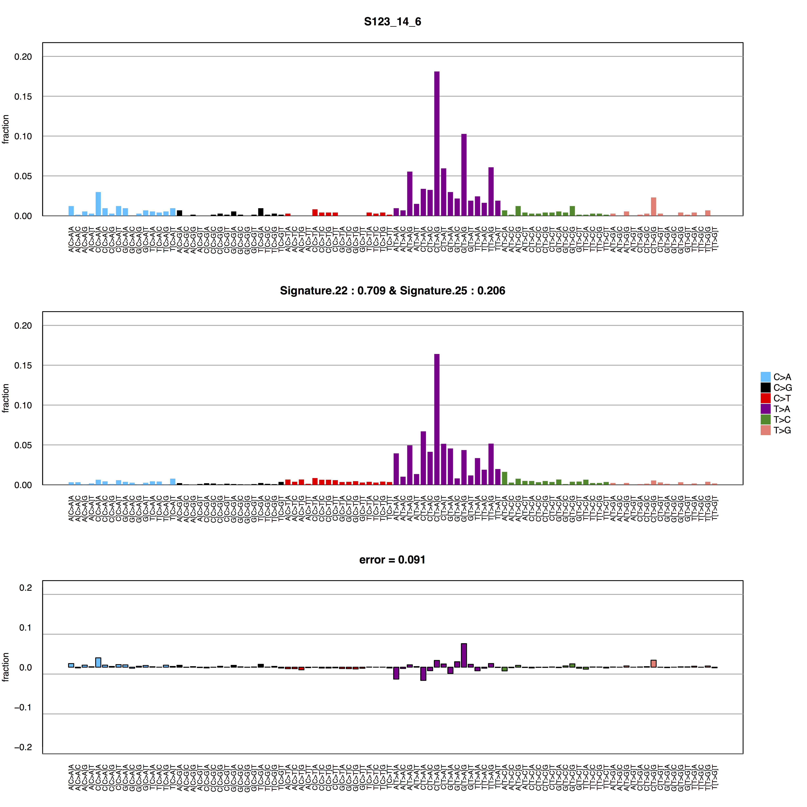

Analyzing mutational signatures in mice using deconstructSigs
Mutational signatures were pioneered by Nik-Zainal et al. in 2012 and the concept has since become instrumental in the analysis of the etiology of cancer. The first publication of mutational signatures was accompanied by the WTSI Mutational Signature Framework by LB Alexandrov. This framework is written in MATLAB, which is a proprietary language/environment. As a result a number of frameworks have been written in non-proprietary languages, allowing free access to mutational signature analyses.
Mutational signature analyses have primarily been done on human tissue, and to the best of my knowledge, the frameworks for performing these analyses don't support non-human analysis out of the box. I ran across this issue in my own research, analyzing exome sequence data from mouse mammary tumors. I'm writing this blog post to show an extremely simple solution to this issue by making some small modifications to the deconstructSigs package.
R packages are generally installed from the central CRAN repository by using the `install.packages` command. However, these packages come pre-compiled and can't be modified, so you'll have to download the package by cloning the deconstructSigs GitHub repository.
The principles for mutational signature analysis for human and mouse samples are of course identical. The only difference is which reference genome is used. The deconstructSigs framework has hard coded the reference genome, as opposed to setting it as a parameter. Therefore, the only changes required to the source code are the following lines of the `mut.to.sigs.input.R` file:
## Line 65:
## From:
unknown.regions <- levels(mut[, chr])[which(!(levels(mut[, chr]) %in% GenomeInfoDb::seqnames(BSgenome.Hsapiens.UCSC.hg19::Hsapiens)))]
## To:
unknown.regions <- levels(mut[, chr])[which(!(levels(mut[, chr]) %in% GenomeInfoDb::seqnames(BSgenome.Mmusculus.UCSC.mm10::Mmusculus)))]
## Line 68:
## From:
warning(paste('Check chr names -- not all match BSgenome.Hsapiens.UCSC.hg19::Hsapiens object:\n', unknown.regions, sep = ' '))
## To:
warning(paste('Check chr names -- not all match BSgenome.Mmusculus.UCSC.mm10::Mmusculus object:\n', unknown.regions, sep = ' '))
## Line 69:
## From:
mut <- mut[mut[, chr] %in% GenomeInfoDb::seqnames(BSgenome.Hsapiens.UCSC.h1910::Hsapiens), ]
## To:
mut <- mut[mut[, chr] %in% GenomeInfoDb::seqnames(BSgenome.Mmusculus.UCSC.mm10::Mmusculus), ]
## Line 74:
## From:
mut$context = BSgenome::getSeq(BSgenome.Hsapiens.UCSC.hg19::Hsapiens, mut[,chr], mut[,pos]-1, mut[,pos]+1, as.character = T)
## To:
mut$context = BSgenome::getSeq(BSgenome.Mmusculus.UCSC.mm10::Mmusculus, mut[,chr], mut[,pos]-1, mut[,pos]+1, as.character = T
OPTIONAL step: I prefer the chart aesthetic found in the original WTSI mutational signature framework to that found in the deconstructSigs framework and have therefore made a few changes to the plotting.R file in order to arrive at the figure shown at the end of this post:
{kind=link}
## Change colour of horizontal background lines
## Lines 76 and 83
## From:
graphics::abline(h = seq(from = 0, to = y_limit, by = 0.01), col = '#d3d3d350', lty = 1)
## To:
graphics::abline(h = seq(from = 0, to = y_limit, by = 0.01), col = 'darkgrey', lty = 1)
## Line 90
## From
graphics::abline(h = seq(from = -y_limit, to = y_limit, by = 0.1), col = '#d3d3d350', lty = 1)
## To
graphics::abline(h = seq(from = -y_limit, to = y_limit, by = 0.1), col = 'darkgrey', lty = 1)
## Remove vertical lines from plot
Comment out/remove lines 77, 84 and 91
## Change color pallete for barplot (Line 70) and legend (line 96)
##Line 70
##From:
grDevices::palette(c("#999999", "#E69F00", "#56B4E9", "#009E73", "#F0E442", "#0072B2"))
##To:
grDevices::palette(c("deepskyblue", "black", "red", "magenta4", "forestgreen", "salmon"))
##Line 96
##From:
graphics::legend('right', legend = unique(tumor_plotting$mutation), col = c("#999999", "#E69F00", "#56B4E9", "#009E73", "#F0E442", "#0072B2"), bty = 'n', ncol = 1, inset=c(-0,0), pch = 15, xpd = TRUE, pt.cex = 2.5)
##To:
graphics::legend('right', legend = unique(tumor_plotting$mutation), col = c("deepskyblue", "black", "red", "magenta4", "forestgreen", "salmon"), bty = 'n', ncol = 1, inset=c(-0,0), pch = 15, xpd = TRUE, pt.cex = 2.5)
## Remove axis ticks
## Lines 78 and 85
## From:
graphics::barplot(tumor_plotting$fraction, names.arg = tumor_plotting$full_context, cex.names = 0.7, las = 2, col = factor(tumor_plotting$mutation), ylim = c(0, y_limit), border = NA, space = 0.3, main = top.title, ylab = 'fraction', add = TRUE)
## To:
graphics::barplot(tumor_plotting$fraction, names.arg = tumor_plotting$full_context, cex.names = 0.7, las = 2, col = factor(tumor_plotting$mutation), ylim = c(0, y_limit), border = NA, space = 0.3, main = top.title, ylab = 'fraction', add = TRUE, col.ticks=rgb(0,0,0,0))
## Line 92:
## From:
graphics::barplot(diff_plotting$fraction, names.arg = diff_plotting$full_context, cex.names = 0.7, las = 2, col = factor(diff_plotting$mutation), ylim = c(-y_limit, y_limit), border = 'black', space = 0.3, main = paste("error = ", error_summed, sep = ""), ylab = 'fraction', add = TRUE)
## To:
graphics::barplot(diff_plotting$fraction, names.arg = diff_plotting$full_context, cex.names = 0.7, las = 2, col = factor(diff_plotting$mutation), ylim = c(-y_limit, y_limit), border = 'black', space = 0.3, main = paste("error = ", error_summed, sep = ""), ylab = 'fraction', add = TRUE, col.ticks=rgb(0,0,0,0))
The package is now compatible with mouse sequence data. In order to install the package and the required dependencies, open your R console and enter the following:
install.packages('devtools')
source("https://bioconductor.org/biocLite.R")
biocLite("BSgenome")
biocLite("BSgenome.Mmusculus.UCSC.mm10")
library(devtools)
install('/path/to/deconstructSigs-master')
library(deconstructSigs)
From here on out, usage of the deconstructSigs package is best explained by the deconstructSigs GitHub page. Nonetheless, for a quick example of a script for running it:
# Read variant lists (skip appropriate number of lines if read in as a .vcf file))
S123_14_6_table<-read.table("/christian/Output/SnpSiftExtracted/S123_14_6.txt", sep='\t')
# Create data frame of variant lists in the long format with columns for sample name
# chromosome number, variant position/coordinate, reference and alternate bases.
df<-data.frame(sample=c(rep('S123_14_6', times=(length(S123_14_6_table$V3)))),
chr=S123_14_6_table$V1, pos=S123_14_6_table$V2, ref=S123_14_6_table$V3,
alt=S123_14_6_table$V4)
## Create input to whichSignatures
sigs.input <- mut.to.sigs.input(mut.ref = df,
sample.id = "sample",
chr = "chr",
pos = "pos",
ref = "ref",
alt = "alt")
## Create mutational signature chart
wchSig = whichSignatures(tumor.ref = sigs.input,
signatures.ref = signatures.cosmic,
sample.id = 'S123_14_6',
contexts.needed = TRUE,
tri.counts.method = 'default')
pdf('S123_14_6.sig.pdf', width = 10, height = 10)
chart<-plotSignatures(wchSig)
dev.off()
If everything goes according to plan, the resulting chart will look something like this:
Posted: 27.07.2016